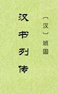

| 史籍 > |
| 汉书·列传 |
| 作者：[后汉]班固 |
|
汉书·列传卷，从班固《汉书》重整理，主要是将多人合传厘分为每人一页，按通俗称谓立目，以便查阅。其中有交错叙述的，难免有割裂之嫌。3篇有“司徒掾班彪曰”的，当是班彪所撰。《匈奴传》等难以以人细分的，不录，请看完整版。 《儒林传》则以儒学传承脉络为主，生平事迹较少，虽按人分页，算不上各人之“传”。《外戚传》则兼有后妃、外戚，按后妃分条，也难算各人之“传”。那时以“万石”为荣，前有“万石君”石奋，后有“万石严妪”严延年母。 （2023-4-26，独孤氏整理，校） |
 |